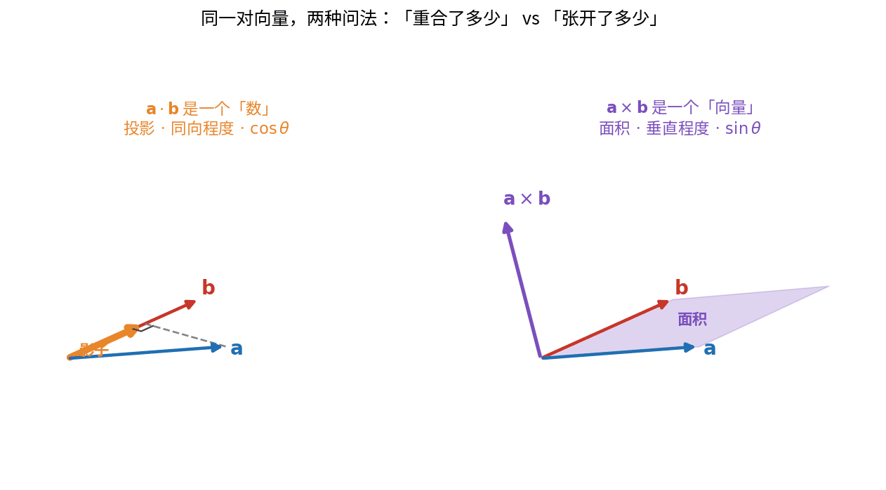
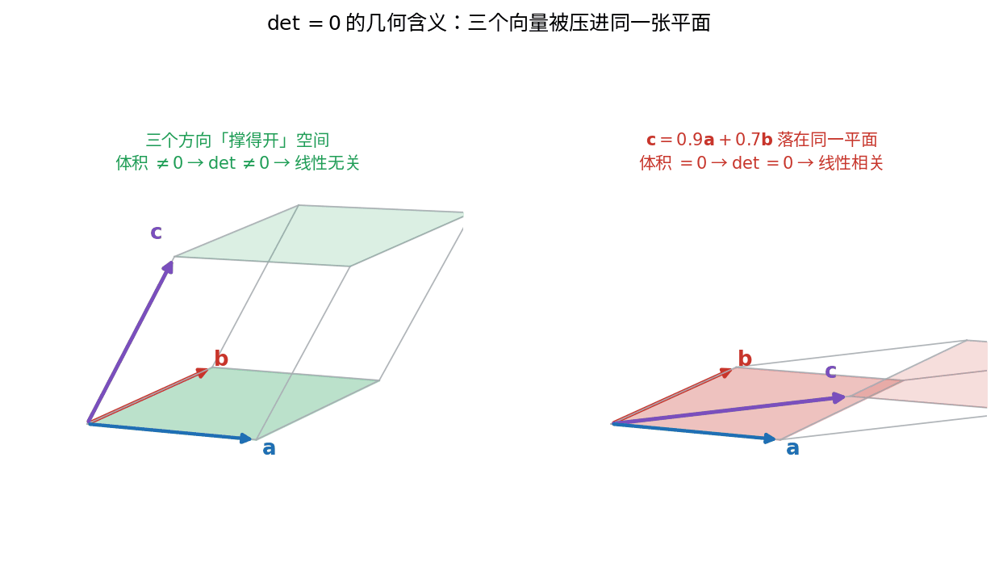
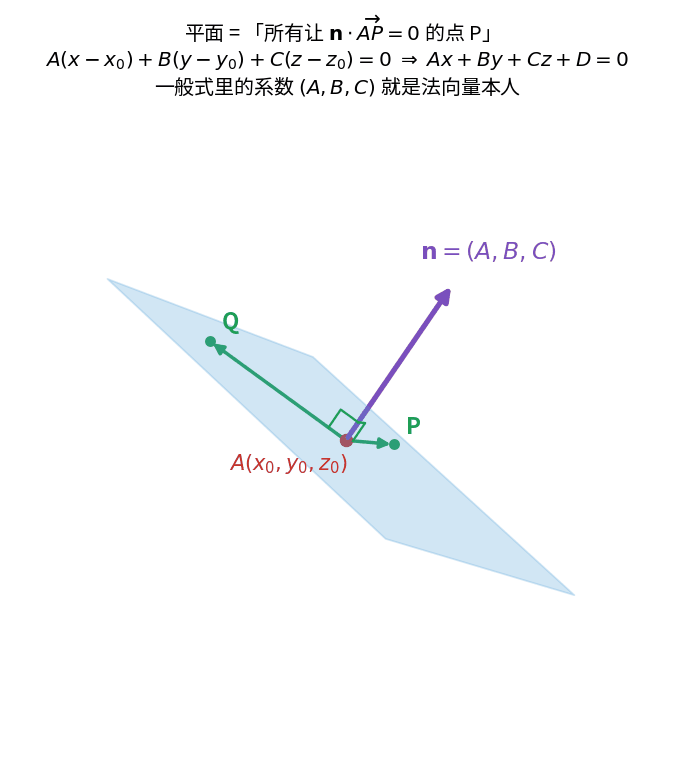
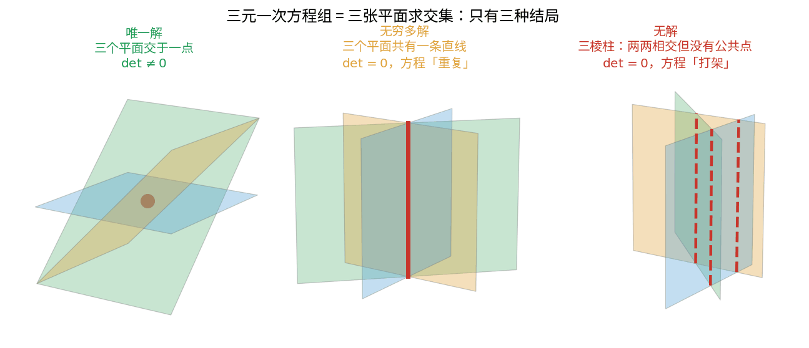

向量与空间
Vectors & Space
点积测重合，叉积测张开，行列式量体积——它们是同一件事在不同维数上的三副面孔。
这不是按教科书模板写的。定义、例题、习题解法，课本里都有，不必重复。
这里只留三样东西：每个概念到底在量什么、 它在更大的结构里站在哪、 它在真实世界的什么地方转着。
最后那样是重点——页面下半部分四个可以拖动的三维演示， 是这份讲义真正想说的话。
一条主线：能撑开几维
这一章所有的概念，都在回答同一个问题的不同侧面：一组方向能撑开多大的空间。
1 个向量 → 一维，一条线 长度 $|\mathbf a|$
2 个向量 → 二维，一张平面 面积 $|\mathbf a\times\mathbf b|$
3 个向量 → 三维，一块体积 体积 $|\mathbf a\cdot(\mathbf b\times\mathbf c)|$
一旦撑不开：
$\det=0$ ⟺ 共面 ⟺ 线性相关 ⟺ 有一个方向是多余的
反过来，方程组是在做减法：三维空间有三个自由度，一个方程削掉一个。 三个独立方程削到零维，交出一个点；有一个方程是多余的，就还剩一维，交出一条线。 所谓"解的维数"，就是这么数出来的。
十一个可以拖的场景
下面这一整套动画把这条主线从头走了一遍：模长怎么来的、 $\overrightarrow{AB}=\mathbf b-\mathbf a$ 为什么是终点减起点、投影带不带符号、 叉积为什么垂直、面积和体积怎么算出来的。 每个场景都能拖动旋转、拖时间轴、留痕迹。
五个概念
点积 Dot Product
- 是什么
- $\mathbf a\cdot\mathbf b=\sum a_ib_i=|\mathbf a||\mathbf b|\cos\theta$，两个向量给出一个数。
- 在量什么
- 投影。$\mathbf a$ 落在 $\mathbf b$ 方向上的影子有多长，再乘以 $\mathbf b$ 的长度。所以它衡量"两个方向有多重合"。
- 结构位置
- 内积的三维特例。它定义了长度（$|\mathbf a|^2=\mathbf a\cdot\mathbf a$）和角度，也就是说——几何是从点积长出来的。任意维都有，不限于三维。往上通向内积空间、正交投影、Gram–Schmidt、最小二乘、傅里叶分析。
- 为零意味着
- 垂直。没有影子，一个方向对另一个毫无贡献。
叉积 Cross Product
- 是什么
- $\mathbf a\times\mathbf b$，两个向量给出一个向量，$|\mathbf a\times\mathbf b|=|\mathbf a||\mathbf b|\sin\theta$。
- 在量什么
- 一箭双雕：长度是两者张成的平行四边形面积，方向是这张平面的法向。
- 结构位置
- 只有三维才有——它依赖"垂直于一张平面的方向唯一"，这在二维要跳出平面，在四维则有无穷多条。往上通向外积与微分形式，那才是任意维的版本。
- 为零意味着
- 平行。平行四边形被压成一条线，面积为零。
两个乘积不是并列的两种工具，而是把一对向量之间的全部信息瓜分干净了：
一个拿走 $\cos$，一个拿走 $\sin$，加起来是全部
所以"该用哪个"从来不是难题：你要的是重合的那一半，还是张开的那一半。

行列式 Determinant
- 是什么
- $n$ 个 $n$ 维向量给出一个数。三阶就是混合积 $\mathbf a\cdot(\mathbf b\times\mathbf c)$。
- 在量什么
- 有向体积。二阶是面积，三阶是体积，$n$ 阶是 $n$ 维体积。负号记录定向，也就是左手系还是右手系。
- 结构位置
- 把叉积的"面积"推广到任意维。它那些看着零碎的性质，全是几何：交换两行变号（定向翻转）、某行乘 $k$ 则值乘 $k$（一条边拉长）、某行加另一行的倍数值不变（切变，同底等高）。最后这条就是高斯消元的通行证。
- 为零意味着
- 撑不满。向量共面、线性相关、矩阵不可逆、方程组没有唯一解——这些说的是同一件事。

平面方程 Plane
- 是什么
- $\mathbf n\cdot(\mathbf r-\mathbf r_0)=0$，展开就是 $Ax+By+Cz+D=0$。
- 在量什么
- 它就是点积的等值面。$\mathbf n\cdot\mathbf r=$ 常数，一个平面上的点在法向上的投影全都一样长。
- 结构位置
- 一般式里的系数 $(A,B,C)$ 就是法向量本人——看到 $2x-3y+z=7$ 应该立刻读出法向 $(2,-3,1)$。点到平面的距离 $d=|\overrightarrow{AQ}\cdot\hat{\mathbf n}|$ 又是一次投影。往上通向超平面，机器学习里的分类边界就是它。
- 为零意味着
- $\mathbf n=\mathbf 0$ 时方程退化，不再是平面。两平面的 $\mathbf n_1\times\mathbf n_2=\mathbf 0$ 则它们平行。

高斯消元 Gaussian Elimination
- 是什么
- 把方程组化成阶梯形再回代。每个方程是一张平面，解方程组就是求交集。
- 在量什么
- 它凭什么合法？因为 $\pi_1$ 与 $\pi_2$ 的任意线性组合，仍然穿过它们原来的交线（平面束）。所以换掉一个方程，一个解都不会丢。这正是行列式那条"某行加另一行的倍数值不变"的同一件事。
- 结构位置
- 秩 = 阶梯形里非零行的个数 = 真正独立的方程个数。于是 解的维数 = 3 − 秩，这就是秩–零化度定理在三维里的样子。往上通向 LU 分解和几乎所有科学计算的底层。
- 为零意味着
- 消到最后一行 $0\,0\,0\mid 0$ 是无穷多解（少了信息），$0\,0\,0\mid k$ 是无解（方程打架）。行列式只能分辨"是否唯一"，分不出这两者。

它们在什么地方转着
下面四个演示都能拖动旋转、拉滑块，参数是活的。它们不是同一个概念的四种画法， 而是同一个公式在四个不相干的行当里各干各的活。
四件毫不相干的事——电场穿过一块板、一个像素的明暗、正午楼房的影子、天线该抬多高—— 背后是同一个投影。学过的东西，其实一直在你身边运转。
藏在计算底下的那一页
课本把这一章的题目写成"求某个向量"。但如果把它们并排放在一起， 会看到一件课本没挑明的事：它们全都是同一个方程组， 只是给的条件数量不同。
1 个方程 → 解空间 2 维，一整张平面 → 题目问"找两个不平行的"
2 个方程 → 解空间 1 维，一条直线 → 答案写成 $k(3,-1,1)$，$k\ne0$
2 个方程 + 长度条件 → 两个点 → 答案恰好是 $\pm$ 一对
为什么 12L Q17 问"任意两个"，而 12N.1 Q11 的答案偏偏是"两个"？ 不是出题人的偏好，是解空间的维数决定的。 同样，课本里"平行"、"共线"、"叉积为零"、"面积为零"分散在四个小节， 底下是同一件事：秩塌陷。
再往前一步
这一章的东西在两个实战项目里真的跑起来了：舵机内部电位器的标定用到最小二乘， 开机平滑用的 S 曲线则是解一个三元方程组——行列式等于 2，非零，所以唯一解。 插值与拟合的分野，在那两页里看得最清楚。
而上面那张结构表里出现的秩、解空间、线性相关，正是下一个板块的入口—— 把方程组写成矩阵之后，这些词会各自有一个几何形状。
完整讲义
页面上是骨架。完整版一万八千字，十四张三维配图全部内嵌， 含推导、例题与分层练习，Markdown 格式，可以直接用任何编辑器打开或打印。
请输入友情码
Enter the friendship code
线索：首页那句话是谁说的？填他的姓，拼音或英文都行。
Hint: who said the line on the homepage? His surname will do.
不对，再想想 Not quite — try again